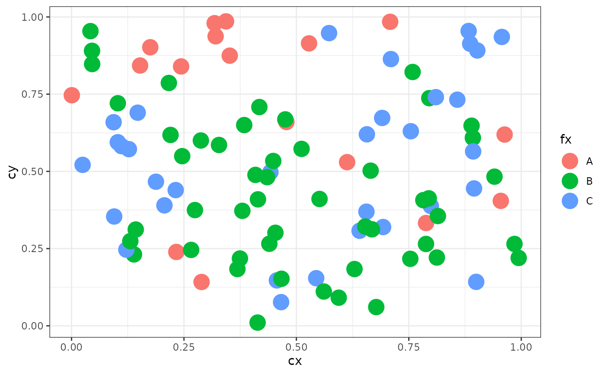
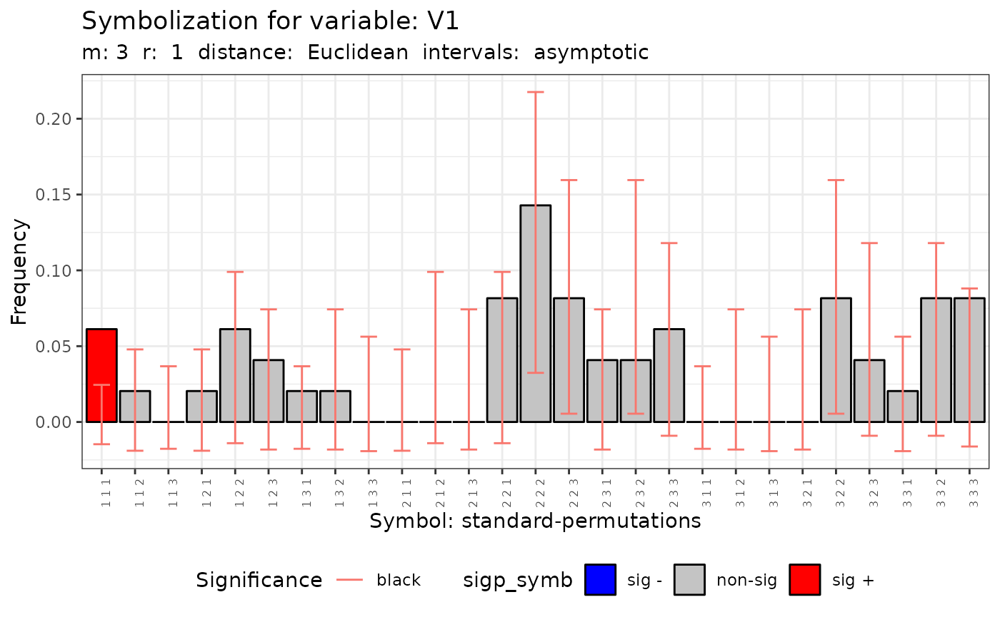
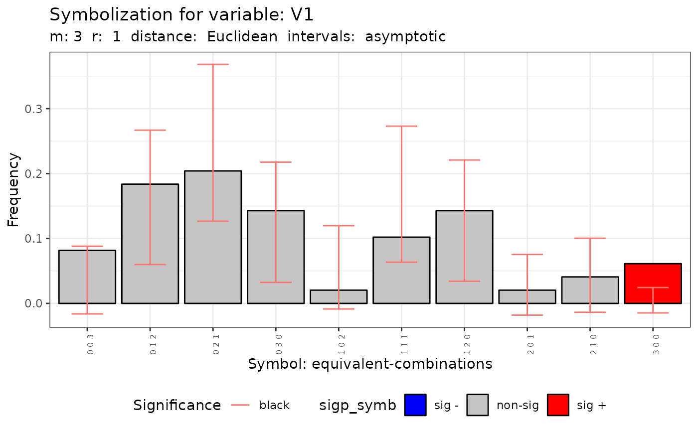
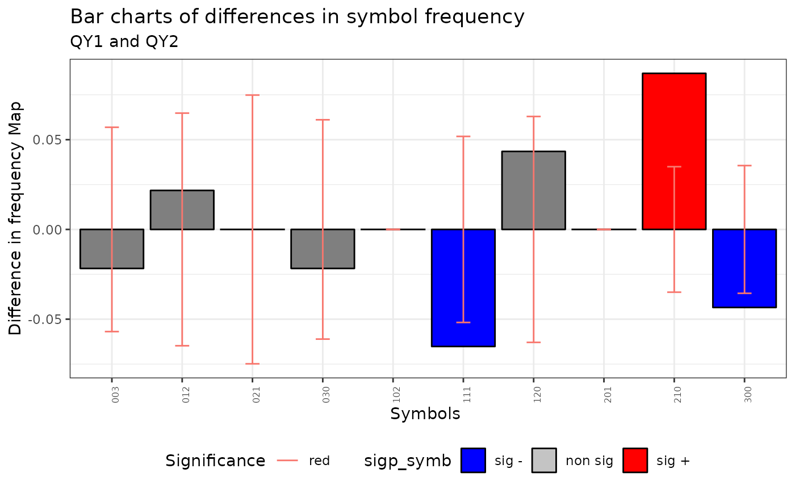
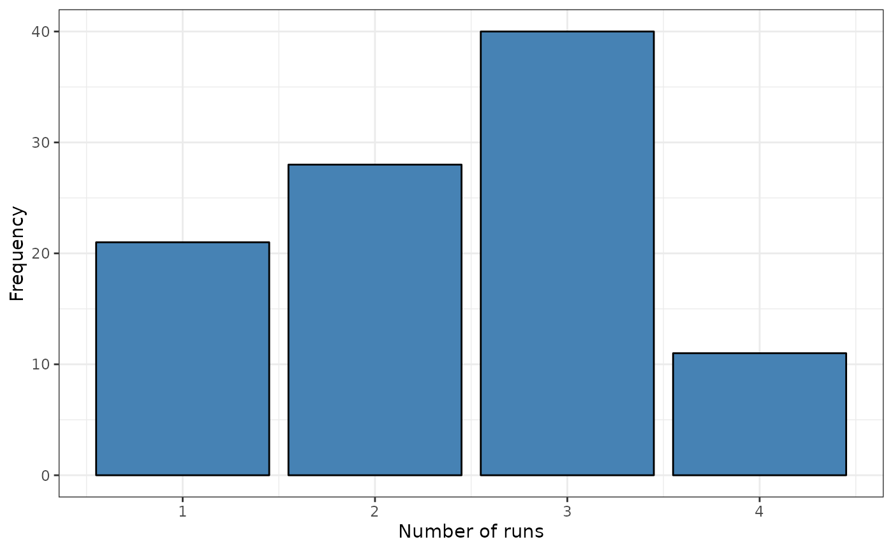
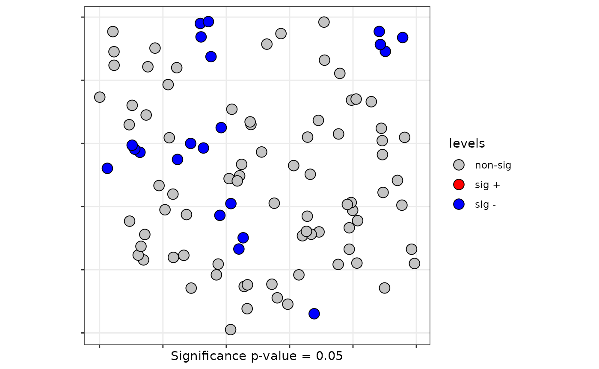
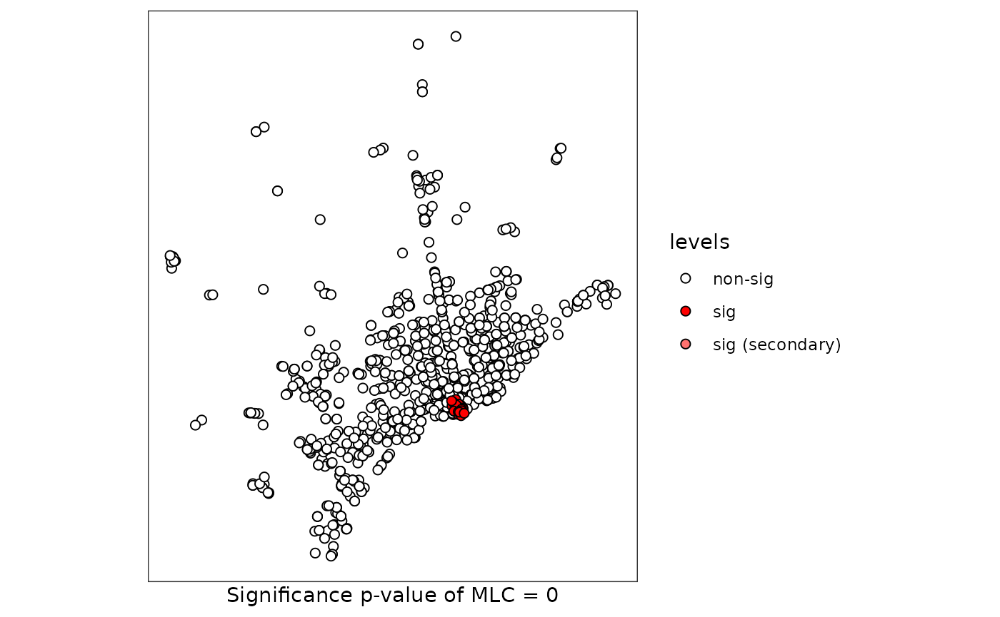

spqdep user guide
The user guide
Fernando A. López, Technical University of Cartagena (Spain)
Román Mínguez, University of Castilla-La Mancha (Spain)
Antonio Páez, McMaster University (Canada)
Manuel Ruiz, Technical University of Cartagena (Spain)
2022-03-04
spq_userguide.RmdIntroduction
This guide show the functionalities of the spqdep package to test spatial dependence on qualitative dataset.
Datasets
Two data sets will be used as examples in this guide:
provinces_spain: The division of Spain into provinces. It is a multypolygon geometry with isolated provinces (islands without neighbouring provinces). See by example Paez et al. (2021).
FastFood.sf: The data set used as example in Ruiz, López, and Páez (2010). It is a geometry of points.
The package is install like usual and the dataset can be loaded using the next code
Data Generating Process (DGP)
Additional to the two dataset available in the spqdep package. The user can generate structured spatial processes using the function. The DGP generate with this function defined in Ruiz, López, and Páez (2010).
The next code show how to generate a random process on a set of random points localized in a square 1x1. In this case, the connectivity criteria is based on the 4 near neighborhood.
set.seed(123)
N <- 100
cx <- runif(N)
cy <- runif(N)
coor <- cbind(cx,cy)
p <- c(1/6,3/6,2/6)
rho = 0.5
listw <- spdep::nb2listw(knn2nb(knearneigh(coor, k = 4)))
fx <- dgp.spq(list = listw, p = p, rho = rho)The next plot show the qualitative spatial process defined.
ggplot(data.frame(fx = fx, cx = cx, cy = cy), aes(x = cx, y = cy, color = fx)) +
geom_point(size = 6) +
theme_bw()
Q-test
The Q-test (Ruiz, López, and Páez 2010) is based on m-surroundings
Before to apply the Q-test it is necessary define a set of the m-surroundings
The function generate a set of m-surrounding.
The user can tuning several parameters to obtain a congruent set of m-surroundings.
m-surroundings
m.surround() is the function to generate m-surroundings.
The output of this function is a object of the class m_surr
Using the method the user can explore the coherence of m-surroundings.
By example. the next code obtain m-surroundings with length m = 3 and degree of overlapping r = 1:
m = 3
r = 1
mh <- m.surround(x = cbind(cx,cy), m = m, r = r)
class(mh)## [1] "m_surr" "list"Methods for the m_surr class
The spqdep have three methods that can be apply to this class: , and
- list the m-surroundings
print(mh)## [,1] [,2] [,3]
## [1,] 1 19 17
## [2,] 2 65 53
## [3,] 3 42 77
## [4,] 4 11 26
## [5,] 6 18 85
## [6,] 7 79 93
## [7,] 8 21 31
## [8,] 13 58 68
## [9,] 15 98 74
## [10,] 17 76 96
## [11,] 20 87 24
## [12,] 22 82 92
## [13,] 25 9 61
## [14,] 26 14 7
## [15,] 27 72 13
## [16,] 31 5 20
## [17,] 37 73 89
## [18,] 38 30 15
## [19,] 41 91 62
## [20,] 46 47 49
## [21,] 48 43 55
## [22,] 49 29 60
## [23,] 52 86 3
## [24,] 53 97 69
## [25,] 55 28 27
## [26,] 56 64 41
## [27,] 57 35 63
## [28,] 60 44 70
## [29,] 61 78 94
## [30,] 62 54 46
## [31,] 63 83 75
## [32,] 67 50 37
## [33,] 68 84 2
## [34,] 69 59 22
## [35,] 70 12 99
## [36,] 71 34 67
## [37,] 74 51 6
## [38,] 75 36 100
## [39,] 77 88 8
## [40,] 85 80 57
## [41,] 89 32 4
## [42,] 90 45 38
## [43,] 92 23 25
## [44,] 93 39 95
## [45,] 94 33 71
## [46,] 95 81 90
## [47,] 96 40 56
## [48,] 99 10 48
## [49,] 100 66 52- generate a summary of some characteristics of the m-surroundings
summary(mh)##
## Characteristics of m-surrounding:
##
## Number of m-surrounding (R): 49
## Length of m-surrounding (m): 3
## Number no-symbolized observations: 1
##
## List of no-symbolized observations:
## 16
##
## List of the degree overlaping:
## There are 2 m-surrounding that have intersection with 1 m-surrounding
## There are 47 m-surrounding that have intersection with 2 m-surrounding
## Mean degree of overlaping: 1.9592- show the spatial structure of the m-surroundings
plot(mh, type = 1)
- With the argument control the user can tuning some characteristics of the m-surroundings.
By example, with control argument, the user can ‘prune’ non-coherent m-surroundings.
control <- list (dtmaxknn = 10)
mh.prune <- m.surround(x = coor, m = m, r = r, control = control)
plot(mh.prune)
The Q-test
- The function obtain the Q-test for a spatial process develop in Ruiz, López, and Páez (2010).
The user must select the longitude of the m-surroundings (m) and the overlapping degree (r). In the next code example, the Q-test is obtain for the DGP spatial process (fx) obtain with the . The coordinates coor must be included as argument.
q.test <- Q.test(fx = fx, coor = coor, m = 3, r = 1)The output is a list with the result for symbols based on permutations (standard) and combinations (equivalent).
The output of this function is an object of the spqtest class.
Distribution of Q-test
The asymptotic distribution is the default distribution to obtain the significance of Q-test (Ruiz, López, and Páez 2010).
Alternatively, the Monte Carlo method can be used to obtain the significance of the test. The paper López and Páez (2012) describe this approach.
| Qualitative Dependence Test (Q) | ||||||||
|---|---|---|---|---|---|---|---|---|
| Distribution: mc. Distance: Euclidean | ||||||||
| Q | p.value | k | N | m | R | n | R/n | 5k^m |
| V1 - standard-permutations | ||||||||
| 168.69 | 0.29300 | 3 | 100 | 3 | 100 | 27 | 3.70 | 135 |
| V1 - equivalent-combinations | ||||||||
| 15.97 | 0.51300 | 3 | 100 | 3 | 100 | 10 | 10.00 | 135 |
Methods for the spqtest class
A summary can be apply to an object of the spqtest class:
summary(q.test)| Qualitative Dependence Test (Q) | ||||||||||
|---|---|---|---|---|---|---|---|---|---|---|
| Distribution: asymptotic. Distance: Euclidean | ||||||||||
| Q | df | p.value | k | N | m | r | R | n | R/n | 5k^m |
| V1 - standard-permutations | ||||||||||
| 89.73 | 26 | 0.00000 | 3 | 100 | 3 | 1 | 49 | 27 | 1.81 | 135 |
| V1 - equivalent-combinations | ||||||||||
| 4.97 | 9 | 0.83732 | 3 | 100 | 3 | 1 | 49 | 10 | 4.90 | 135 |
The histogram of the number of symbols is obtain appling the plot method.
plot(q.test)## [[1]]
##
## [[2]]
The Q-test using a sf object
- A sf object (Pebesma 2018) or a data frame can be used as input of the function:
# Case 3: With a sf object with isolated areas
sf_use_s2(FALSE)## Spherical geometry (s2) switched off
provinces_spain$Male2Female <- factor(provinces_spain$Male2Female > 100)
levels(provinces_spain$Male2Female) = c("men","woman")
f1 <- ~ Male2Female
q.test.sf <- Q.test(formula = f1, data = provinces_spain, m = 3, r = 1)- The method show the histogram of the number of symbols
plot(q.test.sf)## [[1]]
##
## [[2]]Maps comparison. The QMap-test
- The function obtain the test for maps comparison publish in Ruiz, López, and Páez (2012)
The QMap test
The next code generate two qualitative spatial process with different levels of spatial dependence and the Q-Map is apply.
p <- c(1/6,3/6,2/6)
rho = 0.5
QY1 <- dgp.spq(p = p, listw = listw, rho = rho)
rho = 0.8
QY2 <- dgp.spq(p = p, listw = listw, rho = rho)
dt = data.frame(QY1,QY2)
m = 3
r = 1
formula <- ~ QY1 + QY2
control <- list(dtmaxknn = 10)
qmap <- Q.map.test(formula = formula, data = dt, coor = coor, m = m, r = r, type ="combinations", control = control)## Warning in Q.map.test(formula = formula, data = dt, coor = coor, m = m, : The
## ratio between the number of symbolized observations and the number of symbols is
## lower than 5.- The output of id an object of the classes qmap and htest
Methods for qmap class
- The qmap object is a list with two elements. Each element is an object of the class htext
print(qmap[[1]])##
## Q-Map test of Equivalence for qualitative data.
##
## Symbols type: combinations
##
## Ratio Symbolized observations/Num symbols = 4.6
##
## data: QY1 and QY2
## QE = 146.06, df = 9, p-value < 2.2e-16
## alternative hypothesis: two.sided- The method obtains the distribution of symbols with the confidence intervals specified by the user.
plot(qmap, ci=.6)
Runs tests
The runs test (Ruiz, López, and Páez 2021) have global and local versions
Global Runs test
- The function sp.runs.test obtain the spatial runs test.
listw <- knearneigh(coor, k = 3)
srq <- sp.runs.test(fx = fx, listw = listw)- The output of this function is a object of the classes sprunstest and htest
Methods for spruntest class
- The spqdep has two methods for this class y
print(srq)##
## Runs test of spatial dependence for qualitative data. Asymptotic
## version
##
## data: mxf
## sp.runs test = -0.38832, p-value = 0.6978
## alternative hypothesis: two.sided
## sample estimates:
## Total runs Mean total runs Variance total runs
## 281.0000 285.5152 135.1986
plot(srq)
Asymptotic version
- Asymptotic version
lsrq <- local.sp.runs.test(fx = fx, listw = listw, alternative = "less")- The method list the statistic of each observation (point or region)
print(lsrq)## runs.i E.i Std.i z.value p.value
## 1 4 2.855152 0.8722689 1.3124950 0.90532341
## 2 3 2.855152 0.8722689 0.1660594 0.56594492
## 3 2 2.855152 0.8722689 -0.9803761 0.16345026
## 4 3 2.855152 0.8722689 0.1660594 0.56594492
## 5 2 2.855152 0.8722689 -0.9803761 0.16345026
## 6 1 2.855152 0.8722689 -2.1268116 0.01671787
## 7 2 2.855152 0.8722689 -0.9803761 0.16345026
## 8 2 2.855152 0.8722689 -0.9803761 0.16345026
## 9 2 2.855152 0.8722689 -0.9803761 0.16345026
## 10 3 2.855152 0.8722689 0.1660594 0.56594492
## 11 3 2.855152 0.8722689 0.1660594 0.56594492
## 12 4 2.855152 0.8722689 1.3124950 0.90532341
## 13 3 2.855152 0.8722689 0.1660594 0.56594492
## 14 3 2.855152 0.8722689 0.1660594 0.56594492
## 15 3 2.855152 0.8722689 0.1660594 0.56594492
## 16 3 2.855152 0.8722689 0.1660594 0.56594492
## 17 3 2.855152 0.8722689 0.1660594 0.56594492
## 18 2 2.855152 0.8722689 -0.9803761 0.16345026
## 19 4 2.855152 0.8722689 1.3124950 0.90532341
## 20 2 2.855152 0.8722689 -0.9803761 0.16345026
## 21 2 2.855152 0.8722689 -0.9803761 0.16345026
## 22 3 2.855152 0.8722689 0.1660594 0.56594492
## 23 3 2.855152 0.8722689 0.1660594 0.56594492
## 24 2 2.855152 0.8722689 -0.9803761 0.16345026
## 25 3 2.855152 0.8722689 0.1660594 0.56594492
## 26 2 2.855152 0.8722689 -0.9803761 0.16345026
## 27 4 2.855152 0.8722689 1.3124950 0.90532341
## 28 4 2.855152 0.8722689 1.3124950 0.90532341
## 29 3 2.855152 0.8722689 0.1660594 0.56594492
## 30 2 2.855152 0.8722689 -0.9803761 0.16345026
## 31 3 2.855152 0.8722689 0.1660594 0.56594492
## 32 2 2.855152 0.8722689 -0.9803761 0.16345026
## 33 2 2.855152 0.8722689 -0.9803761 0.16345026
## 34 3 2.855152 0.8722689 0.1660594 0.56594492
## 35 2 2.855152 0.8722689 -0.9803761 0.16345026
## 36 3 2.855152 0.8722689 0.1660594 0.56594492
## 37 4 2.855152 0.8722689 1.3124950 0.90532341
## 38 3 2.855152 0.8722689 0.1660594 0.56594492
## 39 2 2.855152 0.8722689 -0.9803761 0.16345026
## 40 3 2.855152 0.8722689 0.1660594 0.56594492
## 41 3 2.855152 0.8722689 0.1660594 0.56594492
## 42 3 2.855152 0.8722689 0.1660594 0.56594492
## 43 2 2.855152 0.8722689 -0.9803761 0.16345026
## 44 4 2.855152 0.8722689 1.3124950 0.90532341
## 45 3 2.855152 0.8722689 0.1660594 0.56594492
## 46 1 2.855152 0.8722689 -2.1268116 0.01671787
## 47 3 2.855152 0.8722689 0.1660594 0.56594492
## 48 3 2.855152 0.8722689 0.1660594 0.56594492
## 49 4 2.855152 0.8722689 1.3124950 0.90532341
## 50 4 2.855152 0.8722689 1.3124950 0.90532341
## 51 1 2.855152 0.8722689 -2.1268116 0.01671787
## 52 2 2.855152 0.8722689 -0.9803761 0.16345026
## 53 2 2.855152 0.8722689 -0.9803761 0.16345026
## 54 1 2.855152 0.8722689 -2.1268116 0.01671787
## 55 4 2.855152 0.8722689 1.3124950 0.90532341
## 56 4 2.855152 0.8722689 1.3124950 0.90532341
## 57 3 2.855152 0.8722689 0.1660594 0.56594492
## 58 2 2.855152 0.8722689 -0.9803761 0.16345026
## 59 2 2.855152 0.8722689 -0.9803761 0.16345026
## 60 3 2.855152 0.8722689 0.1660594 0.56594492
## 61 3 2.855152 0.8722689 0.1660594 0.56594492
## 62 2 2.855152 0.8722689 -0.9803761 0.16345026
## 63 4 2.855152 0.8722689 1.3124950 0.90532341
## 64 4 2.855152 0.8722689 1.3124950 0.90532341
## 65 3 2.855152 0.8722689 0.1660594 0.56594492
## 66 2 2.855152 0.8722689 -0.9803761 0.16345026
## 67 3 2.855152 0.8722689 0.1660594 0.56594492
## 68 3 2.855152 0.8722689 0.1660594 0.56594492
## 69 3 2.855152 0.8722689 0.1660594 0.56594492
## 70 4 2.855152 0.8722689 1.3124950 0.90532341
## 71 3 2.855152 0.8722689 0.1660594 0.56594492
## 72 4 2.855152 0.8722689 1.3124950 0.90532341
## 73 4 2.855152 0.8722689 1.3124950 0.90532341
## 74 3 2.855152 0.8722689 0.1660594 0.56594492
## 75 4 2.855152 0.8722689 1.3124950 0.90532341
## 76 3 2.855152 0.8722689 0.1660594 0.56594492
## 77 3 2.855152 0.8722689 0.1660594 0.56594492
## 78 3 2.855152 0.8722689 0.1660594 0.56594492
## 79 2 2.855152 0.8722689 -0.9803761 0.16345026
## 80 2 2.855152 0.8722689 -0.9803761 0.16345026
## 81 4 2.855152 0.8722689 1.3124950 0.90532341
## 82 3 2.855152 0.8722689 0.1660594 0.56594492
## 83 4 2.855152 0.8722689 1.3124950 0.90532341
## 84 3 2.855152 0.8722689 0.1660594 0.56594492
## 85 2 2.855152 0.8722689 -0.9803761 0.16345026
## 86 2 2.855152 0.8722689 -0.9803761 0.16345026
## 87 3 2.855152 0.8722689 0.1660594 0.56594492
## 88 3 2.855152 0.8722689 0.1660594 0.56594492
## 89 3 2.855152 0.8722689 0.1660594 0.56594492
## 90 3 2.855152 0.8722689 0.1660594 0.56594492
## 91 1 2.855152 0.8722689 -2.1268116 0.01671787
## 92 3 2.855152 0.8722689 0.1660594 0.56594492
## 93 2 2.855152 0.8722689 -0.9803761 0.16345026
## 94 4 2.855152 0.8722689 1.3124950 0.90532341
## 95 2 2.855152 0.8722689 -0.9803761 0.16345026
## 96 3 2.855152 0.8722689 0.1660594 0.56594492
## 97 3 2.855152 0.8722689 0.1660594 0.56594492
## 98 2 2.855152 0.8722689 -0.9803761 0.16345026
## 99 3 2.855152 0.8722689 0.1660594 0.56594492
## 100 3 2.855152 0.8722689 0.1660594 0.56594492- The method identify the localization with values of local test significant.
plot(lsrq, sig = 0.05)
Monte Carlo local runs test
- The Monte Carlo distribution ot the local test using a sf object
## although coordinates are longitude/latitude, st_intersects assumes that they are planar
provinces_spain$Male2Female <- factor(provinces_spain$Male2Female > 100)
levels(provinces_spain$Male2Female) = c("men","woman")
plot(provinces_spain["Male2Female"])
formula <- ~ Male2Female
# Boots Version
lsrq <- local.sp.runs.test(formula = formula, data = provinces_spain, listw = listw, distr ="bootstrap", nsim = 199)
plot(lsrq, sf = provinces_spain, sig = 0.10)The scan test
Two of the scan tests to identify clusters can be apply to test spatial structure in qualitative spatial processes.
The scan test don’t need pre-define the classical W conectivity matrix.
See Kanaroglou (2016)
The scan tests contrasts the null of independence of a spatial qualitative process and give additional information indicating one (or perhaps more) spatial cluster(s).
The scan tests don’t have asymptotic distribution. The significance is obtained by permutational resampling.
The output of the scan function is an object of the classes scantest and htest
Scan bernoulli
- For qualitative spatial process with two categories the bernoulli scan test is obtain with the next code
formula <- ~ Male2Female
scan.spain <- spqdep::scan.test(formula = formula, data = provinces_spain, case="men", nsim = 99, distr = "bernoulli")
print(scan.spain)##
## Scan test. Distribution: bernoulli
##
## data: Male2Female
## scan-loglik = 6.0359, p-value = 0.07
## alternative hypothesis: High
## sample estimates:
##
## Total observations in the MLC = 16.00
## Expected cases in the MLC = 11.84
## Observed cases in the MLC = 16.00scan multinomial
- In case of a spatial process with three or more categories
data(FastFood.sf)
formula <- ~ Type
scan.fastfood <- scan.test(formula = formula, data = FastFood.sf, nsim = 99, distr = "multinomial", windows = "elliptic",
nv = 50)
print(scan.fastfood)##
## Scan test. Distribution: multinomial
##
## data: Type
## scan-loglik = 15.506, p-value < 2.2e-16
## sample estimates:
## H P S Sum
## cases.expect 13.48 14.86 14.66 43
## cases.observ 16.00 1.00 26.00 43Methods for scan test
- Two method can be used with scantest objects: and
summary(scan.fastfood)##
## Summary of data:
## Distribution....................: multinomial
## Number of locations.............: 877
## Total number of cases...........: 877
##
## Scan statistic:
## Total cases in the MLC......: 43
## Names of cathegories...: H P S
## Observed cases in the MLC...: 13.48 14.86 14.66
## Expected cases in the MLC...: 16 1 26
## Value of statisitic (loglik)....: 15.5058
## p-value.........................: 0
##
## IDs of cluster detect:
## Location IDs included..................: 68 849 152 499 630 763 827 765 617 600 607 48 58 588 743 843 74 122 750 115 645 61 226 796 876 699 610 597 596 721 751 53 186 659 778 63 106 229 585 738 612 131 208
plot(scan.spain, sf = provinces_spain)
plot(scan.fastfood, sf = FastFood.sf)
Similarity test
The Farber, Marin, and Páez (2014) paper develop the similarity test
Simiarity test
The function calculates the similarity test for both asymptotic distribution and permutational resampling.
coor <- st_coordinates(st_centroid(FastFood.sf))
listw <- spdep::knearneigh(coor, k = 4)
formula <- ~ Type
similarity <- similarity.test(formula = formula, data = FastFood.sf, listw = listw)
print(similarity)
##
## Similarity test of spatial dependence for qualitative data.
## Distribution: asymptotic
##
## data: Type
## Similarity-test = -5.4476, p-value = 5.105e-08
## alternative hypothesis: two.sidedjoin-count tests
- The functions of the spdep R-package have been wrapped for Bernoulli and Multinomial distributions. Asymptotic or Monte Carlo distributions (permutations) can be used to evaluate the signification of the tests.
Asyntotic distribution
provinces_spain$Older <- cut(provinces_spain$Older, breaks = c(-Inf,19,22.5,Inf))
levels(provinces_spain$Older) = c("low","middle","high")
f1 <- ~ Older + Male2Female
jc1 <- jc.test(formula = f1, data = provinces_spain, distr = "asymptotic", alternative = "greater", zero.policy = TRUE)## although coordinates are longitude/latitude, st_intersects assumes that they are planar
summary(jc1)| JoinCount Spatial Tests (asymptotic) | |||||
|---|---|---|---|---|---|
| pairs | z-value | pvalue | Joincount | Expected | Variance |
| Older - multinomial - alternative: greater - Join count test under nonfree sampling | |||||
| high:high | −0.56 | 0.71077 | 14 | 15.71 | 9.48 |
| low:low | −0.93 | 0.82392 | 7 | 9.34 | 6.35 |
| middle:middle | −0.88 | 0.81070 | 13 | 15.71 | 9.48 |
| low:high | −0.47 | 0.68162 | 24 | 25.88 | 15.78 |
| middle:high | −1.21 | 0.88738 | 28 | 33.27 | 18.88 |
| middle:low | −0.22 | 0.58727 | 25 | 25.88 | 15.78 |
| Jtot | −1.29 | 0.90190 | 77 | 85.02 | 38.52 |
| Male2Female - binomial - alternative: greater - Join count test under nonfree sampling | |||||
| men-men | −2.17 | 0.98504 | 60 | 68.39 | 14.92 |
| woman-woman | 2.11 | 0.01740 | 13 | 8.01 | 5.59 |
| men-woman | −2.47 | 0.99333 | 38 | 49.39 | 21.19 |
Monte Carlo distribution
jc1 <- jc.test(formula = f1, data = provinces_spain, distr = "mc", alternative = "greater", zero.policy = TRUE)## although coordinates are longitude/latitude, st_intersects assumes that they are planar
summary(jc1)| JoinCount Spatial Tests (Monte Carlo) | ||||
|---|---|---|---|---|
| pairs | pvalue | Joincount | Expected | Variance |
| Older - multinomial - alternative: greater - Monte-Carlo simulation of join-count statistic (nonfree sampling) | ||||
| high:high | 0.50900 | 14 | 13.77 | 10.80 |
| low:low | 0.68200 | 7 | 8.33 | 6.31 |
| middle:middle | 0.53800 | 13 | 13.86 | 10.40 |
| low:high | 0.40700 | 24 | 22.89 | 16.40 |
| middle:high | 0.68300 | 28 | 29.55 | 18.26 |
| middle:low | 0.25300 | 25 | 22.60 | 16.01 |
| Jtot | 0.38900 | 77 | 75.03 | 22.51 |
| Male2Female - binomial - alternative: greater - Monte-Carlo simulation of join-count statistic | ||||
| men-men | 0.52150 | 60 | 60.34 | 23.29 |
| woman-woman | 0.01750 | 13 | 7.10 | 5.95 |
References
Farber, Steven, Manuel Ruiz Marin, and Antonio Páez. 2014. “Testing for Spatial Independence Using Similarity Relations.” Geographical Analysis 47 (2): 97–120. https://doi.org/10.1111/gean.12044.
Kanaroglou, Pavlos. 2016. Spatial Analysis in Health Geography. Routledge. https://doi.org/10.4324/9781315610252.
López, Fernando A, and Antonio Páez. 2012. “Distribution-Free Inference for Q (M) Based on Permutational Bootstrapping: An Application to the Spatial Co-Location Pattern of Firms in Madrid.” Estadı́stica Española 54 (177): 135–56.
Paez, Antonio, Fernando A Lopez, Tatiane Menezes, Renata Cavalcanti, and Maira Galdino da Rocha Pitta. 2021. “A Spatio-Temporal Analysis of the Environmental Correlates of Covid-19 Incidence in Spain.” Geographical Analysis 53 (3): 397–421.
Pebesma, Edzer. 2018. “Simple Features for R: Standardized Support for Spatial Vector Data.” The R Journal 10 (1): 439–46. https://doi.org/10.32614/RJ-2018-009.
Ruiz, Manuel, Fernando López, and Antonio Páez. 2010. “Testing for Spatial Association of Qualitative Data Using Symbolic Dynamics.” Journal of Geographical Systems 12 (3): 281–309.
———. 2021. “A Test for Global and Local Homogeneity of Categorical Data Based on Spatial Runs.” Working Paper.
———. 2012. “Comparison of Thematic Maps Using Symbolic Entropy.” International Journal of Geographical Information Science 26 (3): 413–39. https://doi.org/10.1080/13658816.2011.586327.